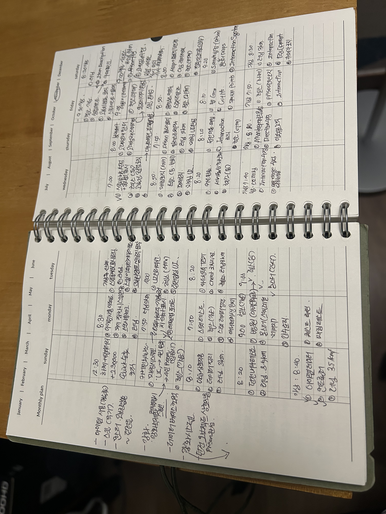
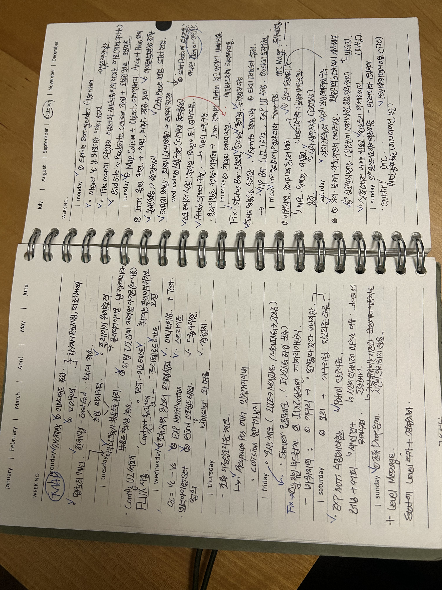
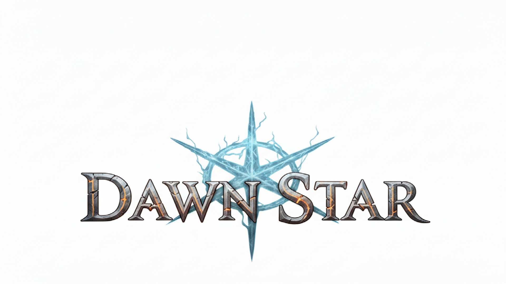

Authoritative 서버 기반 판정
전투·스킬·아이템 등 모든 핵심 로직을 서버가 최종 판정.
클라이언트는 입력 전송과 시각적 피드백만 담당하여 치팅과 탈조를 방지합니다. 스킬 cooldown·마나·타겟 유효성을 서버에서 검증하고, 클라이언트 예측·보간으로 체감 지연을 최소화했습니다.

던스타는 2D MMORPG 게임으로, 플레이어는 거대한 서사 속의 인물이 되어 세계 저편에서 넘어온 악의 근원인 '이빨'을 제거하기 위한 여정을 떠납니다. 풍부한 상상력을 기반으로 탄생한 깊이 있는 세계관의 일부를 배경으로 합니다.
실시간 전투, 퀘스트, 거래, 강화, 채팅·매칭 등 핵심 MMORPG 시스템을 포함합니다.



전투·스킬·아이템 등 모든 핵심 로직을 서버가 최종 판정.
클라이언트는 입력 전송과 시각적 피드백만 담당하여 치팅과 탈조를 방지합니다. 스킬 cooldown·마나·타겟 유효성을 서버에서 검증하고, 클라이언트 예측·보간으로 체감 지연을 최소화했습니다.
월드·NPC·플레이어 위치·인벤토리를 실시간 동기화.
Protocol Buffers로 직렬화하고 이벤트 기반 메시징으로 변경분만 전송합니다. Pub/Sub 채널 구조로 채팅과 매칭을 분리했습니다.
조건/보상 스크립트 기반 DSL, 상태 머신으로 진행 관리.
퀘스트 진행 단계를 DB에 영구 저장하고, 스크립트 DSL로 조건·보상을 정의했습니다.
양측 확인 거래, 확률 테이블 기반 강화.
거래는 양측 확인(handshake)과 아이템 lock으로 레이스 조건을 방지합니다. 강화는 확률 테이블과 보호 아이템으로 경제 sink를 설계했습니다.
아이템 강화 수치 테이블, 스토리 진행 연출.
강화 시스템의 수치 테이블과 보호 메커니즘을 설계하고, 스토리 퀘스트 연출을 구현했습니다.
C# .NET 기반 전용 서버. 클라이언트–서버 TCP/TLS 연결, 세션 인증, Pub/Sub 채널 구조로 채팅·매칭 분리. EF Core + SQL Server로 캐릭터·아이템·퀘스트 상태 영속화. Protocol Buffers로 네트워크 메시지 직렬화.
플레이어는 거대한 서사 속의 인물이 되어 세계 저편에서 넘어온 악의 근원 '이빨'을 제거하기 위한 여정을 떠납니다. 풍부한 상상력 기반의 세계관, 세력 구조, 지역별 특성을 스프레드시트와 기획서로 정의하고 경제·성장 루프를 반복 시뮬레이션했습니다.
대규모 환경을 가정한 2D MMORPG의 핵심 시스템을 6개월간 구축했습니다. .NET 서버와 Unity 클라이언트, EF Core·SQL 기반 데이터베이스, Protocol Buffers 네트워크 직렬화까지 전 과정을 설계·구현했습니다.
던스타에 포함된 주요 시스템:
세부 개발 과정은 제작 과정 페이지에서 확인할 수 있습니다.